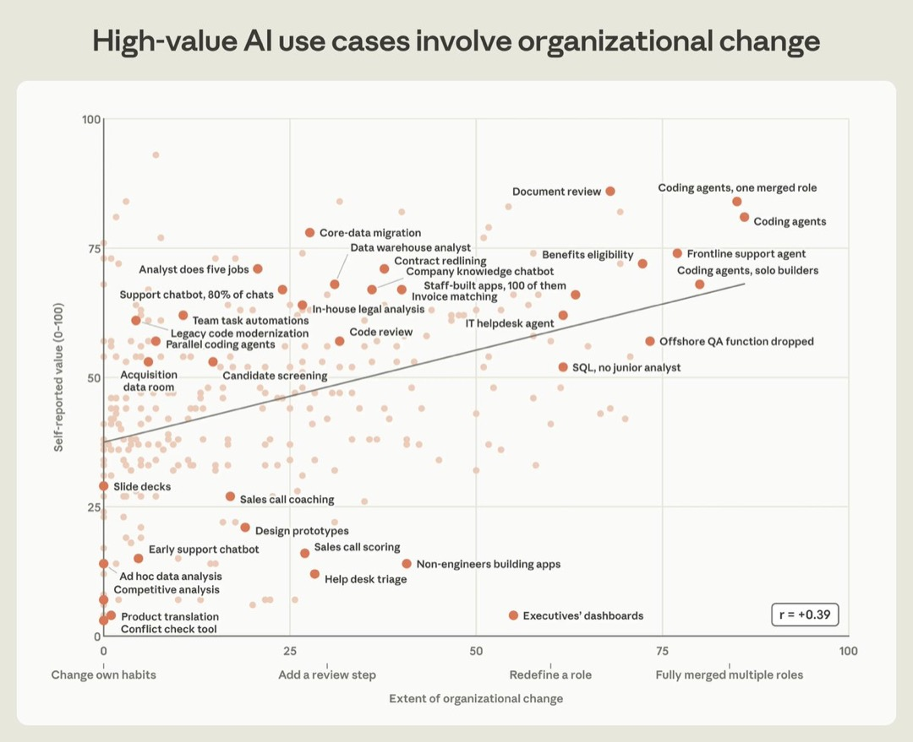
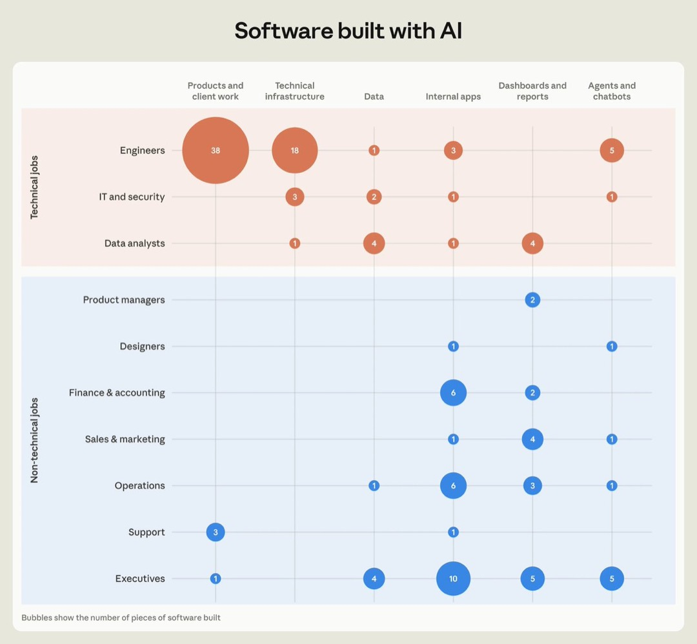
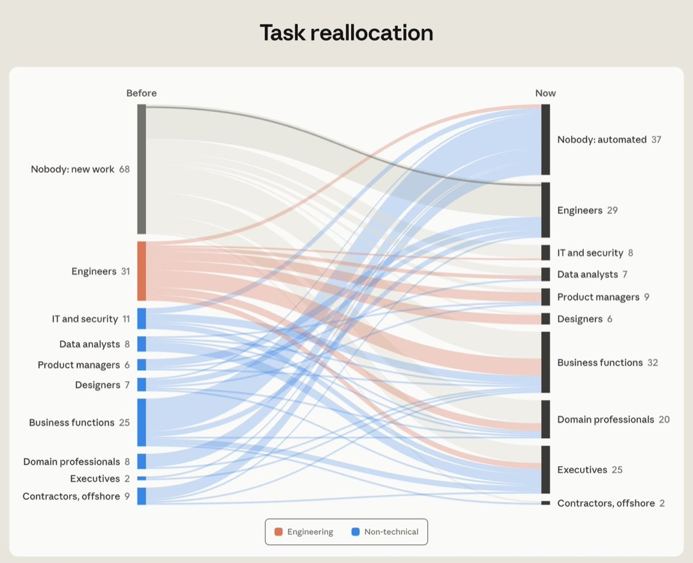

本期速览
02 Uber沉淀5000+Skill工程实践
03 Anthropic调研58家企业AI落地
04 UXC接入MCP Events双向通道
05 《深入理解AI Agent》发布3.0版
01｜Agent记忆系统论文与工程清单
来源（X） · @Tao100086 · 2026-11-24 11:26
一、 奠基必读经典（建立认知框架）
这几篇定义了今天所有 Agent 记忆系统的基本范式和术语：
- Generative Agents: Interactive Simulacra of Human Behavior (Park et al., Stanford, UIST 2023)
推荐理由：斯坦福“AI 小镇”论文，Agent 记忆系统的开山之作。首次完整跑通了 Memory Stream（记忆流）+ Reflection（定期反思抽象）+ Retrieval（按近因性 Recency、重要性 Importance、相关性 Relevance 加权检索） 的闭环。
论文链接：https://arxiv.org/abs/2304.03442
- MemGPT: Towards LLMs as Operating Systems (Packer et al., UC Berkeley, 2023 — 现 Letta 前身)
推荐理由：借鉴操作系统虚拟内存设计，将上下文窗口视为 RAM（主存），外部存储视为 Disk（外存），让 LLM 通过 Tool Call 自主管理上下文换入换出（Paging）与自我编辑记忆块。
论文链接：https://arxiv.org/abs/2310.08560
开源仓库：https://github.com/letta-ai/letta
- CoALA: Cognitive Architectures for Language Agents (Sumers et al., Princeton, TMLR 2024)
推荐理由：最清晰的理论分类框架。借鉴认知科学，把 Agent 记忆严格拆分为 Working Memory（工作记忆）、Episodic Memory（情景记忆/历史轨迹）、Semantic Memory（语义记忆/世界知识） 和 Procedural Memory（程序记忆/技能与代码）。
论文链接：https://arxiv.org/abs/2309.02427
- Reflexion (Shinn et al., NeurIPS 2023) & Voyager (Wang et al., 2023)
推荐理由：分别代表了情景反思记忆（把失败教训写成自然语言存入记忆指导下次尝试）和程序/技能记忆（在 Minecraft 中将成功的代码封装进 Skill Library 持续复用）。
Reflexion 论文链接：https://arxiv.org/abs/2303.11366
Voyager 论文链接：https://arxiv.org/abs/2305.16291
二、 前沿核心架构论文（2024–2026 工业界与学术界主流）
解决传统向量检索“无法处理事实变更（如搬家/改偏好）、多跳推理弱、缺乏结构化联系”的核心痛点：
- HippoRAG: Neurobiologically Inspired Long-Term Memory for Large Language Models (Gutiérrez et al., NeurIPS 2024 — 及其后续 HippoRAG 2)
核心看点：受人类海马体记忆索引理论启发，结合知识图谱 + Personalized PageRank 实现单步完成跨文档多跳关联记忆检索，比传统向量 RAG 更擅长串联碎片信息。
HippoRAG 论文链接：https://arxiv.org/abs/2405.14831
HippoRAG 2 论文链接：https://arxiv.org/abs/2502.14802
- Zep: A Temporal Knowledge Graph Architecture for Agent Memory (Rasmussen et al., 2025 — 底层引擎 Graphiti)
核心看点：聚焦双时态知识图谱（Bi-temporal Knowledge Graph）。给每条记忆加上“事件发生时间”与“入库有效区间”，当状态改变时使旧事实优雅失效而非粗暴覆盖，解决企业级 Agent 对动态实体演化的追踪问题。
论文链接：https://arxiv.org/abs/2501.13956
Graphiti 开源仓库：https://github.com/getzep/graphiti
- Mem0: Building Production-Ready AI Agents with Scalable Long-Term Memory (Chhikara et al., 2025)
核心看点：工业界应用极广的提取-更新（Extract-and-Update）记忆层论文，拆解了如何低延迟、低 Token 成本地从多轮对话中动态抽取事实、消解冲突，并结合向量与图结构（Mem0g\text{Mem0}_gMem0g）服务生产环境。
论文链接：https://arxiv.org/abs/2504.19413
开源仓库：https://github.com/mem0ai/mem0
- A-MEM: Agentic Memory for LLM Agents (Xu et al., 2025)核心看点：借鉴 Zettelkasten（卢曼卡片盒笔记法），每次写入新记忆时动态生成结构化笔记卡片并自动与历史记忆建立双向链接、更新旧卡片上下文，实现自组织的记忆网络。
论文链接：https://arxiv.org/abs/2502.12110
三、 系统综述与评测基准（快速把握全景）
如果你想在最短时间内俯瞰整个领域的脉络与短板：
综述首选：
- Memory in the Age of AI Agents: A Survey (Late 2025)：
目前社区引用最广的全景综述之一，从 Forms（载体形式：Token 级 / 参数级 / 隐状态）、Functions（功能）、Dynamics（形成、演化与检索） 三个维度系统梳理了整个领域。
论文链接：https://arxiv.org/abs/2512.13564
配套论文列表仓库：https://github.com/Shichun-Liu/Agent-Memory-Paper-List
- From Storage to Experience: A Survey on the Evolution of LLM Agent Memory Mechanisms (Luo et al., ACL Findings 2026)：
把记忆演进总结为 Storage（存轨迹）→ Reflection（做反思）→ Experience（抽技能实现自进化） 三阶段，非常适合用来理解 Coding Agent / Computer-Use Agent 的经验复用。
论文链接：https://arxiv.org/abs/2605.06716
评测基准论文（看懂记忆系统怎么评测）：
- LongMemEval: Benchmarking Chat Assistants on Long-Term Interactive Memory (Wu et al., ICLR 2025) 与 LoCoMo (Maharana et al., ACL 2024)：
读这两篇能立刻明白生产级记忆系统的五大硬骨头——信息抽取、跨会话推理、知识更新（冲突覆盖）、时间推理与防幻觉拒答。
LongMemEval 论文链接：https://arxiv.org/abs/2410.10813
LoCoMo 论文链接：https://arxiv.org/abs/2402.17753
四、 必读工程技术博客（强烈推荐，贴近实战）
很多最佳工程实践并没有发成论文，而是沉淀在一线团队的博客里：
- Lilian Weng — LLM Powered Autonomous Agents (Lil'Log)入门圣经。其中关于 Memory 的章节把感觉记忆、短期上下文学习与长期外部检索的映射讲得极其透彻。
文章链接：https://lilianweng.github.io/posts/2023-06-23-agent/
- LangChain Blog — Memory for Agents & LangMem 文档非常务实地把 CoALA 理论落地为工程代码模式，清晰对比了 “Hot Path（对话同步更新记忆，延迟高但实时）” 与 “Background / Subconscious（后台异步整理记忆）” 两种架构取舍。
博客链接：https://www.langchain.com/blog/memory-for-agents
LangMem 文档：https://langchain-ai.github.io/langmem/
- Letta Blog — Agent Memory 系列 & Sleep-Time Compute提出 Sleep-Time Compute（睡眠期计算）
概念：与其只在用户提问时做推理（Test-time compute），不如利用 Agent 空闲时间在后台异步重组、去重、反思并重写核心记忆块。
Agent Memory 综述博客：https://www.letta.com/blog/agent-memory-how-to-build-agents-that-learn-and-remember
Sleep-Time Compute 博客：https://www.letta.com/blog/sleep-time-compute
- Anthropic — Effective Context Engineering for AI Agents（及 Claude Code CLAUDE.md / 文件系统记忆实践）代表了近年极其实用的另一派工程趋势：
基于文件系统与 Markdown 的扁平透明记忆（如 MEMORY.md、渐进式披露笔记、由 Agent 自己 grep/edit 维护知识库），在 Coding Agent 场景往往比黑盒向量库更可控、更易调试。
文章链接：https://www.anthropic.com/engineering/effective-context-engineering-for-ai-agents
建议阅读路径
想做工程落地选型：先看 LangChain《Memory for Agents》 + Anthropic 上下文工程博客，再对比阅读 Mem0（应用层 API 托管记忆）、Zep/Graphiti（时序图谱记忆）和 Letta（Agent 自主管理状态）的设计差异。
想做学术研究或深度自研：按 Generative Agents → CoALA → HippoRAG → Memory in the Age of AI Agents (Survey) → LongMemEval 的顺序精读。
02｜Uber沉淀5000+Skill工程实践
来源（X） · @seekjourney · 2026-11-24 10:32
都是实打实的经验之谈啊，他们一年内积累了 5000+ Skills，单月调用超过 100 万次。
目前做了 Skill 自动评测、消融实验、Token 成本优化，Skill 持续进化。
做 Agent Harness 的朋友，建议认真读一下。
引用内容
Uber Engineering @UberEng
中文译文
原文
03｜Anthropic调研58家企业AI落地
来源（X） · @hungryturbo · 2026-11-24 19:47
没有空谈技术趋势，全程实打实地回答了大家最关心的几个问题，公司上 AI 到底赚到钱没？招人真的变少了吗？为什么很多团队用着用着就推不动了？
我把里面最有价值的 10 个发现和案例，整理了出来：
1、极少裁员，都在缩减招聘，砍掉外包。
58 家美国企业里，真正因为自动化直接裁撤本土正式岗位的只有 2 家，但 2/3 的公司缩减了招聘计划。某医疗公司高管直言：“我们在靠买 Token 扩充产能，而不是招人”。更有 AI 原生初创公司，把 90% 的运营预算花在买 Token 上，只留 10% 给人力成本。真正的重灾区是标准化外包，某金融公司，一口气砍掉了上百名海外数据处理与软件开发外包人员，另一家软件公司，找外部律所审合同的费用，也全都省掉了。
2、高回报靠增加产出，更靠重构流程。
随手用 AI 做几页 PPT，写写周报，在企业眼里的商业价值其实垫底。真正帮公司赚大钱的用法，都在创造业务增量，而且必须配合工作职责的重构，比如商业地产经理，直接用 AI 把空置商铺，渲染成潜在租客的品牌门店效果图，大幅提高签约率。市场部负责人也不再逐篇修改宣传物料，而是转向维护一份写满品牌规范的 skill.md 文件，供全员调用。
3、AI 省下的时间，员工悄悄拿去遛狗。
调研中约 10% 的 AI 提效红利，被员工个人悄悄截留了。有高管吐槽员工故意隐瞒 AI 提效的成果，把每周省出来的 10 个小时拿去遛狗，甚至有人被投资人怀疑每天只上半天班。背后的博弈很真实，某公司用 AI 让审批效率翻倍，并一口气砍掉 90% 的招聘名额，结果业务专家集体消极怠工。工作量翻倍却不涨工资，最后逼得公司只能发礼品卡，哄着大家多审单子。
4、强推自动化的结果，员工抵触，系统很快过时。
管理层自上而下强推自动化极易翻车，一方面，让业务专家帮 AI 调优工作流，等于让人亲手给自己钉棺材，加上部分公司用 AI 搞严密绩效监控，员工不得不费尽心思让自己的工作成果，讨好老板的考核 Agent。另一方面，花重金找外部供应商定制的固化系统，根本追不上底层模型的迭代速度，系统上线三个月就过时，沦为无人问津的僵尸应用。
5、外行零基础写软件，难在后期维护。
编程 Agent 最惊艳的爆发点，其实在非技术岗位，化工厂的质检主管，零基础写出了过滤率监控程序，会计把原本耗时 80 小时的养老金跨系统核对，做成了自动化工具。但热闹背后全是隐性维护成本，某大型律所算完账后，果断放弃自研招聘数据看板，为了省下每月几十美元的成熟 SaaS 订阅费，反而要搭进去专人长期维护代码，实在得不偿失。
6、局部提速太快，反而引发跨部门内耗。
单点环节效率狂飙，下游部门却接不住，只会引爆组织摩擦。某设备制造厂的工程师，用 AI 瞬间就把产品界面翻译成 10 国语言，结果，因为客服团队根本接不了外语电话，新功能还没上线就被迫关停。狂热用户们，动不动就向其他部门狂发长达 7 页的 AI 生成方案，逼得同事直接回怼，“别发了，我不看你的 AI 邮件！”更有高管犀利吐槽，“一个平庸的工程师配上 AI，简直是社会公害。”
7、合并岗位职能，彻底打破部门墙。
当内容和代码的生产速度暴涨，跨部门交接带来的上下文损耗，和开会扯皮就成了最大阻力。走在前面的企业，正在激进合并细分职能，有公司把产品经理、设计师、研发工程师、测试乃至基础架构合并进同一个全栈岗位。也有企业将线索挖掘、销售转化、客户成功三个岗位合三为一。正如一位技术负责人所说，“两个人加 Claude 就是最强形态，只要两个人达成共识，直接上线。”
8、离钱越近的工作，AI 模型越难胜任。
报告里有一句高管的金句，离钱越近的工作，模型越难做好。聪明的公司都在把员工往战略决策，产品审美与人际沟通这些瓶颈环节转移，某 CTO 直言 Claude 是个糟糕的产品经理，果断让产品经理把精力集中到打磨产品品味，和寻找市场契合度上。建筑公司的项目经理，让 AI Agent 每天早上自动催工地进度，汇总客户日报，自己腾出整个上午的时间，去跟客户深度沟通核心需求与服务体验。
9、AI 负责写初稿，新人跟着前辈练审稿。
很多行业的初级岗位，本质是新人的练级房，一家律所敏锐地发现，AI 接管法律文书初稿后，如果直接取消初级律师写文书的环节，未来就没人能分辨什么才是好文书。他们的解法非常值得借鉴，强制要求初级律师拿着 AI 生成的初稿，与资深律师结对协作，逐行批注修改。把人才培养模式，从低效的苦熬写初稿，直接升级为高密度的审稿判断力训练。
10、打通全员数据权限，守住安全底线。
想让 Agent 真正落地干活，前提是提供好业务上下文，并建好安全沙箱，毕竟数据安全高管警告，现在每个员工都是开发者，每天都在制造新的安全攻击面。一家卡车运输公司搭建好 Agent 可调用的数据仓库后，业务经理们像上瘾一样自己跑 SQL 查数据，彻底告别过去提个报表需求，动辄排队一两年的历史。AI 原生团队，则推行公开工作，把所有客户通话与会议录音实时转录到公共频道，沉淀成全员共享的数据活水池。






04｜UXC接入MCP Events双向通道
来源（X） · @jolestar · 2026-11-24 14:51
这两年关于 MCP 的讨论基本只有一个方向：Agent 怎么调外部工具（Agent -> App）。但真想做交互应用——让 Agent 陪你下盘棋、在画布上一起改图——卡住的都是反方向：应用侧怎么把状态变化推给 Agent（App -> Agent）。
协议里其实早就有 Notification，但用不起来：没有订阅参数和结构化 Payload；强依赖长连接，断线就丢，没有游标续传；大部分 MCP Host 也没做自动订阅和分发。
MCP Events（SEP-3415）把事件抬到和 Tool 对等的位置：events/list 自描述契约，Stream / Poll / Webhook 多种投递方式，再用不透明游标解决断线续传。
通道打通只是第一步。真正的难题会转移到 Agent Runtime：怎么缓冲归并，防止事件冲爆上下文；怎么路由和排优先级；以及怎么守住安全边界——Event Payload 和 Tool Result 一样属于不可信数据，但 Event 跟容易让 LLM 混淆。
协议负责铺路，剩下的脏活累活在 Runtime。
全文见：https://jolestar.com/mcp-events/
引用内容
Holon @holonrun
中文译文
UXC 0.23.1 已发布。它新增了 MCP Events（SEP-3415，现已进入 Beta 阶段）。
有什么变化：当没有人主动提问时需要采取行动的 agent——比如收到新邮件、仓库推送、P1——现在收到的是事件而非轮询。
轮询路径也随本次版本一起发布。
原文
UXC 0.23.1 is out. It adds MCP Events (SEP-3415, now in Beta).
What changes: an agent that has to act when nobody asks — a new email, a repo
push, a P1 — gets events instead of polling.
The polling path ships in this release.
05｜《深入理解AI Agent》发布3.0版
来源（X） · @bojie_li · 2026-11-22 23:50
- 重写了各章节的大部分内容，消除了一些 AI 味，把综述式的文风改成了教学式的，更容易理解
- 新增 Jev 类决策模型在事件过滤、工具安全判断、评测 rubric、RAG 筛选、多模态信息稀疏化等方面的应用
- 新增 Meta Muse、Pine、dsh superagent 等 personal agent 的办事逻辑
- 新增 Multica、LobeHub 等办公 agent
- 新增 Anthropic 证明黎曼猜想、OpenAI 证明千禧年问题等科研 agent
- 修订语音交互部分，纳入一些最新的工作
- 重绘书中大量插图
- 新增社区翻译的蒙古语版本
- 合入社区的 30+ PR，解决 20+ issues
引用内容
Bojie Li @bojie_li
https://github.com/bojieli/ai-agent-book
全书围绕核心公式 Agent = LLM + 上下文 + 工具 展开，十章内容如下：
- 第 1 章 · Agent 基础知识：从"模型即 Agent"的新范式出发，建立 Agent = LLM + 上下文 + 工具 的核心公式，并引入 Harness 工程——模型之外的一切工程能力，才是真正的竞争力所在。
- 第 2 章 · 上下文工程：上下文决定 Agent 的能力上限。深入大模型 API 的上下文结构、KV Cache 友好设计、提示工程、动态提示词与 Agent Skills、状态栏元信息，以及上下文压缩策略。
- 第 3 章 · 用户记忆和知识库：让 Agent 跨会话记住用户、并接入外部知识。涵盖用户记忆系统、RAG 基础管道，以及超越扁平文本的知识组织与检索（结构化索引、知识图谱等）。
- 第 4 章 · 工具：工具是 Agent 的双手。讲工具分类与通用设计原则、MCP 协议与工具选择的挑战、感知/执行/协作三类工具，以及事件驱动的异步 Agent。
- 第 5 章 · Coding Agent 与代码生成：代码是"能创造新工具的工具"，是通用 Agent 的元能力。以生产级 Coding Agent 为例，展示这一最强通用工具的完整实现。
- 第 6 章 · Agent 的评估：把 Agent 的表现变成可比较的信号。从评估环境、数据集设计、指标体系，到统计显著性、可观测性、评估驱动选型，直至生产级内部评估与仿真环境。
- 第 7 章 · 模型后训练：预训练、SFT、RL 三阶段全景。何时选 SFT、何时选 RL，RLHF、算法比较、数据与环境，以及让模型学会工具调用、提升样本效率的前沿探索。
- 第 8 章 · Agent 的自我进化：不改权重也能成长。三种学习范式，从经验中学习、主动工具发现，到"从工具使用者到工具创造者"，让 Agent 从"聪明"走向"熟练"。
- 第 9 章 · 多模态与实时交互：把感知与行动从文本扩展到语音、GUI 与物理世界。语音三范式（级联/端到端全模态/全双工）、流式语音感知与合成、Computer Use 与机器人操作。
- 第 10 章 · 多 Agent 协作：群体的智能可以高于个体。多 Agent 分类框架、何时真正优于单 Agent、共享与不共享上下文的协作、失败模式，以及涌现的"Agent 社会"。
Repo: https://github.com/bojieli/ai-agent-book

06｜猜盐上线一年获160万用户
来源（X） · @niandwo · 2026-11-23 20:24
坐标成都，前阿里员工张月单枪匹马做了一款 AI 猜谜游戏“猜盐”。
没有融资，一分钱广告没投，上线一年干出 160 万用户，单月营收峰值 11.8 万。
整个团队就他一个全职，代码大部分用 Claude 写，外加从玩家群里招的 2 个大学生兼职。 玩法也极度克制，就是用大模型把知识包装成猜病、猜国、猜词等几十种互动游戏。
这个事给独立开发者的 3 个暴击：
1、AI 时代，“超级个体”的上限被拉高了。 以前需要策划、题库编辑、前后端的活，现在1个人 + Claude + LLM API 就能闭环。
2、不要迷信高大上的 B 端工具。 满足人类的好奇心、无聊感和胜负欲，永远是最高频、最容易自传播的刚需。
3、寻找“大厂盲区”。 寻找那些天花板只有几百万、大厂不屑于下场，但足够让 1-3 个人活得非常体面的细分利基市场。
普通人做 AI 创业，与其去卷大模型底座，不如想想怎么用 AI 把某个老掉牙的小游戏换个思路重做一遍。你们觉得呢？